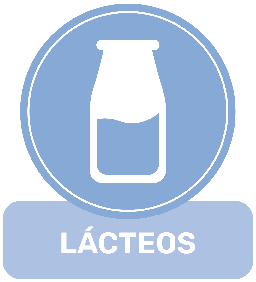
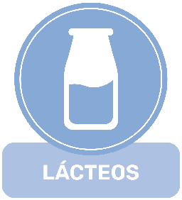

- Para Picar -

Aceitunas
Perfectas para acompañar comidas, bebidas y buenas conversaciones. Las aceitunas son ese elemento culinario que no falta en casi ningún restaurante o bar de España.
1€

Tortilla de Patata
Puedes pedirla con o sin cebolla. Aunque invitamos a todos a probar cosas nuevas, no juzgamos preferencias. Como dato curioso: Así en España se discute si la tortilla lleva cebolla o no. En Venezuela se discute si las caraotas llevan azucar o no.
6€

Croquetas (X6)
Pequeñas delicias que gustan a todos. Contamos con 3 opciones para que puedas disfrutarlas:
- Jamón ibérico
- Boletus con champiñones
- Espinacas con queso
5€
 


Patatas Bravas
La opción de los más osados a la hora de escoger algo para picar. Probablemente, el único platillo que te pica mientras lo picas. Recomendamos encarecidamente acompañarlo con bebida.
7€
- Para comer con Cuchara -

Gaspacho
España es famosa por sus tomates y, por extensión, por su Gazpacho. En Venezuela, las sopas y cremas se suelen servir bien calientes, así que no es raro ver a un venezolano 'soplar' el Gazpacho la primera vez que lo prueban.
4€

Salmorejo
Si eres de los que se pregunta cuál es la diferencia entre el Gazpacho y el Salmorejo, nuestra recomendación es que pruebas ambos. Si bíen podemos intentar explicar las muchas sutiles diferencias, este es de esos casos donde la lengua entiende por si sola lo que al lenguaje le cuesta explicar.
4€

Pisto con Huevo
O sin huevo. No queremos que las alergias o las preferencias del paladar te impidan probar nuestro delicioso Pisto. Sobra decir que estamos orgullosos de cómo nos queda. Lo servimos en su sartén con dos cucharas; para compartir o para comer a dos manos.
7€

Lentejas con Chorizo
Contamos también con una opción sin chorizo si quieres una alternativa completamente vegana. En cualquiera de los casos, es un platillo lleno de proteínas que te ayudará a encarar el resto del día.
6€

Fabada Asturiana
Aunque surgío como un plato para calentar el cuerpo durante el invierno, el increíble gusto de la Fabada ha hecho que perdurara por más de 5 siglos, y es por ello que lo servimos todo el año.
5€

Cocido Madrileño
Si crees que un platillo necesita Azafrán de la India y Caviar Caspio para considerarse de la Realeza, el Cocido Madrileño es prueba de lo contrario. Este sencillo plato que se prepara con huesos de res sin carne, fue uno de los eternos favoritos del Rey Carlos I y su hijo el Rey Felipe II.
6€

Suquet de Pescado
Conocido en Catalán como Suquet de Peix, es un plato cuyo nombre se queda corto. Compuesto de rapé, gambas, calamares, almejas y caldo de mariscos; sería más apropiado llamarlo Sopa de Ecosistema Marino. Sin embargo, eso le quitaría el encanto.
10€
- Para hincar el Diente -

Tostas
Para este clásico del desayuno español tienes 4 opciones:
- Salmón
- Aguacate y crema de berenjena
- Capresa
- Tomate deshidratado y huevo frito
4€

Bocatas
Puedes elegir entre pán rustico, pan de cereales o pan artesano para combinar con una de estas 4 opciones:
- Jamón Ibérico y queso
- Calamares
- Capresa
- Pollo con chipotle
6€

Paella (para 2 personas)
Si hay algun platillo español que conocen todos los venezolanos es la Paella. En el país caribeño se ha convertido en una comida tipica en grandes eventos, reuniones familiares o, como lo hacen Chuo y Chelo, para compartir con tu persona favorita.
25€

Pulpo a la Gallega
Hay quienes dicen que cocer el pulpo en olla de cobre no hace ninguna diferencia, pero para nosostros no hay otra forma de hacerlo. Es uno de los mandamientos inalterables de nuestra cocina.
14€

Conejo en Salmorejo
El conejo no está en el menú coloquial venezolano, así que platillo fue un gran reto para nuestro chef. Ha tomado mucho ensayo y error llegar al gustillo que puedes disfrutar hoy y que ahora llena de orgullo a nuestra cocina.
15€

Bacalao al Pil Pil
Este platillo lo puedes pedir tradicional o al estilo maracucho. ¿Cuál es la diferencia? Que la versión maracucha la servimos con muuuuucha salsa.
13€

Codillo de Cerdo
Te avisamos que tendras que esperar unos 45 minutos por eeste platillos. Queremos que lo disfrutes en su punto perfecto de cocción y para ello es necesario meterlo al horno después de que lo hayas pedido. Te aseguramos que valdrá la pena la espera.
20€
- Temporada Navideña -

Cochinillo al Horno (por cuartos)
Para este platillo tenemos una promoción especial. Si pides el Cochinillo entero (los 4 cuartos) te lo llevas por 130€. Y en ese caso te lo podemos servir entero en una pieza o por cuartos separados.
36€

Besugo al Horno
La receta de este platillo se originó en Madrid a pesar de lo lejos que está la capital de las costas. Es tanto el deseo se los madrileños por el Besugo que en el siglo XVIII se creó una ruta expedita para transportarlo fresco desde Berneos y Santander.
24€

Pavo Relleno
El plato representativo de la Celebración de Acción de Gracias en América encontró su lugar en las cenas de Navidad de España y Venezuela, al ser eventos que reunen a la familia y amigos, quienes se pueden compartir la tarea de acabar con este enorme manjar.
50€
- Bebidas -

Horchata
Muchos venezolanos que vienen a España ven la Horchata y piensan que es su Chicha pero con otro nombre. Se ven igual, incluso ambos se suelen servir con canela, pero el sabor es distinto. La horchata se hace con chufa y la chicha con arroz.
4€
Bitter Kas
El Bitter Kas resulta una nueva experiencia para los venezolanos que están acostumbrados a refrescos siempre dulces, mientras este tiene un toque amargo que lo hace característico y el ingrediente de muchos tragos populares.
3€

Limonada
La bebida refrescante predilecta del verano. Pero nosotros la servimos todo el año. Te contamos un dato interesante: como la limonada se prepara con solo un poco de jugo de limón, es en realidad un cóctel.
3€

Tinto de Verano
Esta bebida es una combinación de ganar ganar. Te permite tomar vino tinto con cualquier comida y no solo con carnes rojas y te permite tomar refresco de una forma mucho más saludable.
3€

Ladrón de Manzanas
Es difícil creer que esta babida tiene solo unos años de existencia con lo popular que es. En nuestra experiencia es una bebida que con pocos detractores. Si te gustan las manzanas, te gustará esta alternativa de la cidra.
3€
- Postres -

Turrón de Yema
En el corazón de nuestro chef, el Turrón de Yema es el dulce Español que complementa al dulce venezolano llamado Suspiro. Mientras el turrón requiere la yema del huevo, los suspiros requieren la clara y nada se desperdicia. Si quieres probar unos buenos suspiros, puedes comprar un paquete en nuestra caja por 5€.
5€

Crema Catalana
Muchos dulces españoles tuvieron su primera elaboración en manos de monjas devotas y la Crema Catalana no es la excepción. No hay un registro exacto de su concepción, pero se cree que un grupo de monjas dieron con esta crema por mera improvisación cuando un flan que tenían que servir no terminaba de cuajar.
4€

Tarta de Santiago
Para sorpresa de nadie, este es el dulce emblema de la ciudad de Santiago de Compostela. Sin embargo, quiza no sepas que también se ha vuelto en un postre popular en las poblaciones que conforman el famosísimo Camino de Santiago. Lo que lo hace un peregrinaje con un toque dulce.
4€

Churros con Chocolate
Si eres Español, te recomendamos probar la versión venezolana de los churros, que podras encontrar en el Menú Venezuela. ¿Qué es lo que cambia? La forma de servirlos. Parece insignificante, pero para muchos hace toda la diferencia.
5€